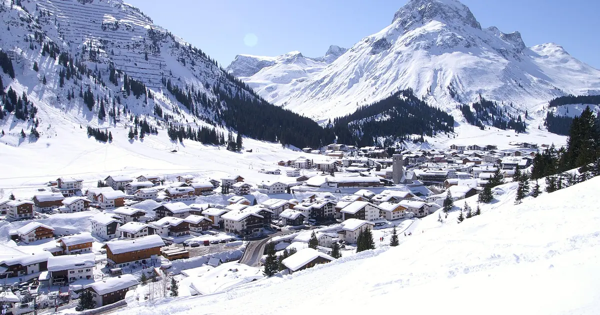

When the southern Alps beat the north: 46 winters of snow on both sides of the main ridge
Each bar in the chart is one winter. Blue bars point up when the southern side of the Alps had the relatively bigger winter, gold bars point down when the north did. Over 46 winters, from 1980-81 to 2025-26, the score is almost even: the south came out ahead 24 times. The interesting part is how far apart the two sides can be in the same season.
See the live snow forecast for Courmayeur in the SnowScope appSnow depth, powder alerts and the 3D map, free.
How we compared two sides of one mountain range
Comparing raw snow depth between resorts is unfair. Lech always has more snow than Nassfeld, in good years and bad. So we compared each resort with itself. For every winter, we took the deepest snow at mid-mountain and divided it by that resort's usual peak, the middle value of its 46 winters. 100 % means a normal winter for that place.
Then we built two groups. The north: 11 resorts on the northern side of the main ridge, from Avoriaz and Engelberg to St. Anton, Lech and KitzSki. The south: 14 resorts on the Italian and southern French side, from Isola 2000, Artesina and Sestriere in the west to Courmayeur, Madesimo, Aprica, Sella Nevea, Tarvisio and Nassfeld in the east. For each winter we took the middle value of each group.
The bar is the gap between the two: south minus north, in points of a normal winter.
What the chart shows
The biggest blue bar is 2013-14. The southern group reached 151 % of a normal peak, the northern group only 93 %. Close behind are 2008-09 (south 162 %, north 113 %) and 1985-86 (south 162 %, north 108 %). 2010-11 is a quieter case of the same thing: a poor winter in the north (70 %) and a decent one in the south (115 %).
The biggest gold bars are 1999-00 (north 136 %, south 80 %), 1998-99 (north 140 %, south 91 %) and 1991-92 (north 121 %, south 74 %). In those winters the storms came mostly from the north-west, and the south stayed in their shadow.
Last winter, 2025-26, was a small blue bar: neither side was generous, but the south (99 %) did better than the north (79 %).
Two sides that do not move together
If the two sides followed each other, the bars would be short and the chart would be boring. They are not. Our measure of how closely the two groups move together comes out at 0.23, on a scale where 0 means no link and 1 means they always rise and fall together. That is a weak link.
In plain words: knowing that Austria had a big winter tells you very little about Piedmont in the same season. Only one winter in 46 was really big on both sides at once. For trip planning, that is useful. If the north is having a thin year, the south is not automatically thin too, and the other way round.
"Really big" here means at least 120 % of a normal peak in both groups. The two sides do share some years: both were above normal in 14 winters and both below normal in 11. What is rare is a really big winter on both sides at once. A poor winter on the whole range usually means that the big storms simply stayed away, from the Atlantic and from the Mediterranean alike.
One more detail from the chart: the blue bars are not spread evenly. Several of the largest ones fall between 2008-09 and 2013-14. It is tempting to see a trend there, but with one winter per bar, a run of five or six winters is not enough to call it one. The years since then have been more mixed.
The weather behind the blue bars
Most snow in the northern Alps comes with winds from the west and north-west. Moist Atlantic air is pushed up against the northern side of the range, cools and drops its snow there. This is called "Stau" in German: the air piles up against the mountains. By the time it crosses the main ridge, much of the water is gone, and the south often gets wind and sun.
The southern side gets its big snow in another way. A low-pressure area forms over the Gulf of Genoa or the western Mediterranean, often when cold air from the north reaches the warm sea. That low pulls moist air from the south and south-east straight into the Italian side of the Alps. Skiers in the French southern Alps call the easterly version "retour d'est", the return from the east: snow comes back over the ridge from Italy into the high valleys of the Maurienne, the Haute-Tarentaise and the Alpes-Maritimes.
These storms are less frequent than the Atlantic ones, but they can be very wet. A few of them in one winter are enough to produce a 2013-14 or a 2008-09.
How sure can we be?
The groups are small, and the main ridge is not a clean line: some resorts sit close to it and get snow from both sides. Courmayeur, for example, has a normal peak of 192 cm at mid-mountain (1,976 m), close to St. Anton's 194 cm at 1,962 m. In the south, a resort like Isola 2000 has a normal peak of only 68 cm at 2,214 m, because its snow comes in fewer, bigger storms.
We also looked only at the deepest snow of each winter. A winter can have a good peak and still have long dry spells, or a thin start. And these are model values for past winters, not resort reports. The pattern, though, is clear and stable: the two sides of the Alps live different winters more often than you might think.
Tips for skiers
- If one side of the Alps has a poor start, check the other side before you cancel a trip.
- Southern storms often come in short, very wet bursts: book flexible dates and watch the forecast a week ahead.
- Easterly storms bring snow to the high valleys right next to the Italian border, not to the whole French Alps.
- After a big southern storm, the avalanche danger can rise quickly: always read the official avalanche bulletin before going off-piste.
References and credits
- SnowScope: Southern Alps in December 2026 – warmer and wetter, snow odds close to usual. snowscope.app/blog/en/2026/11/southern-alps-december-2026-snow-outlook.html
- European Avalanche Warning Services: official avalanche bulletins. www.avalanches.org/
About these numbers
Snow numbers: SnowScope snow history, 46 past winters (1980-81 to 2025-26) at mid-mountain, a model of the past corrected for height (an estimate for an area, not resort reports). For each resort, each winter's deepest snow is divided by its median peak; group values are medians. North: Avoriaz, Engelberg, Grindelwald-Wengen, Laax, Garmisch-Classic, Kleinwalsertal-Oberstdorf, St. Anton, Lech, Mayrhofen, KitzSki, Obertauern. South: Isola 2000, Auron, Artesina, Prato Nevoso, Prali, Sestriere, Bardonecchia, Courmayeur, Macugnaga, Madesimo, Aprica, Sella Nevea, Tarvisio, Nassfeld.
Cite this report
For research, teaching or the press: the numbers and charts are free to reuse under CC BY 4.0 with this citation.
SnowScope (2026), When the southern Alps beat the north: 46 winters of snow on both sides of the main ridge, https://snowscope.app/blog/en/2026/11/southern-alps-vs-northern-alps-snow-46-winters.html, accessed 2026-11-10
SnowScope (Atlas Labs). (2026, November 10). When the southern Alps beat the north: 46 winters of snow on both sides of the main ridge. SnowScope snow reports. https://snowscope.app/blog/en/2026/11/southern-alps-vs-northern-alps-snow-46-winters.html
BibTeX
@misc{snowscope2026southernalpsvsnorthernal,
author = {{SnowScope (Atlas Labs)}},
title = {When the southern Alps beat the north: 46 winters of snow on both sides of the main ridge},
year = {2026},
month = nov,
howpublished = {\url{https://snowscope.app/blog/en/2026/11/southern-alps-vs-northern-alps-snow-46-winters.html}},
note = {Published 2026-11-10 17:12 UTC; accessed 2026-11-10}
}· CC BY 4.0 · Methods, data and tools →
Courmayeur: snow and temperature by height, this winter vs last (tools) →
Follow Courmayeur
Free: a message when fresh snow is coming, and the forecast every morning.
More snow reports

Artesina got 44 cm of new snow in the last 72 hours. It now has about 20 cm on its upper slopes, according to our snow model.

From Walser farmers to the White Ring: the dates that made Lech Zürs, followed by our snow record then and now, the first fifteen of 46 past winters against the last fifteen.

Kitzbühel is famous and low. What 46 past winters say about snow at 762 m, 1,377 m and 1,993 m, how it has changed, and which weeks are the safer bet.